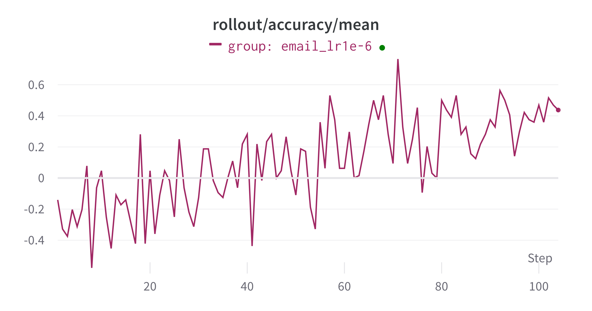
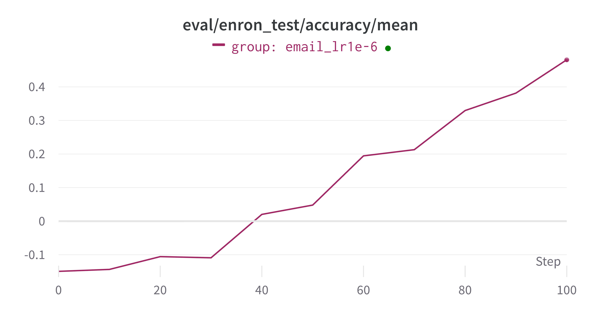

Email Search Workflow
This example shows a multi-turn email search workflow, inspired by ART. We implement a ReAct Agent and define tools for email search. Note that this example rewquires installing AgentScope==0.1.6.
Core Components
We need to define some components:
EmailSearchWorkflow: The main class that orchestrates the entire process. It initializes the environment, manages the agent, and runs the task.EmailSearchAgent: The “brain” of the operation.It receives the user’s query and a system prompt.
It decides which actions to take (e.g., which tool to use).
It is built using the
AgentScopeframework.
Tools: These are the functions the agent can call to interact with the environment. Based on the code, these tools would likely include:
search_email: To find relevant emails.read_email: To read the content of a specific email.generate_response: To provide the final answer when it is found. This tool can be inherited from theAgentScopeframework.
Judge LLM: The judge LLM is used to evaluate the agent’s performance, defined by
auxiliary_models.
Run the Experiments
Step 1: Prepare the Database
We prepare the data by running the following command:
python trinity/common/workflows/envs/email_searcher/prepare_data.py
If you want to choose a new database path, you can modify the DEFAULT_DB_PATH in [prepare_data.py]. Also, remember to set an environment variable DEFAULT_EMAIL_DB_PATH to point to the database path before moving to the next step.
Step 2: Run the Workflow
The config files are located in email_search.yaml and train_email_search.yaml.
To run this example, you can run the following command:
trinity run --config examples/grpo_email_search/email_search.yaml
Evaluation Results
The results are shown in the following figure (the accuracy ranges from -0.1 to 1.0):

